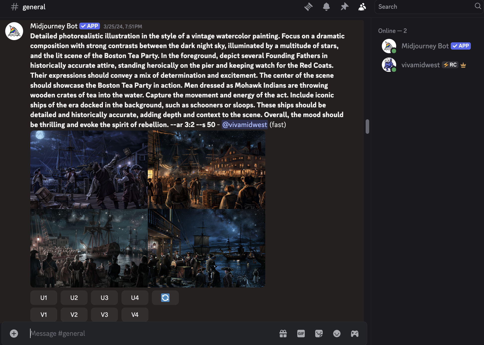
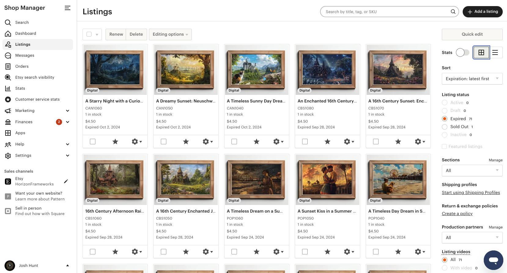
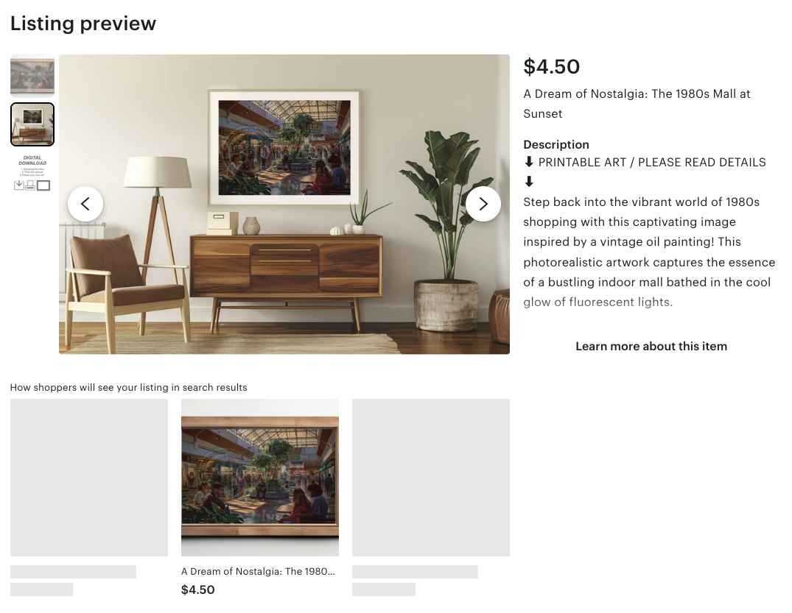

Josh Hunt - Project Case Study
**Project Title:** Launching an E-Commerce Shop with AI-Generated Art
**Role:** Shop Owner/Designer
**Dates:** January 2024 - June 2024
**Project Type:** Personal Development
1. Project Overview
This project began as an exploration into the burgeoning field of AI-generated art, specifically using Midjourney. What started as a personal learning endeavor quickly evolved into a practical application of new skills: the creation and launch of an e-commerce shop on Etsy, "Horizon Frameworks," specializing in digital products derived from AI-generated images. This case study outlines the journey from initial curiosity and skill acquisition to understanding the mechanics of online entrepreneurship and multi-modal digital content creation.
2. The Challenge/Opportunity
As AI image generation tools like Midjourney gained prominence, I was intrigued by their creative potential. I signed up for Midjourney to learn how to effectively use prompt engineering to generate unique and visually appealing images. Through experimentation, I amassed a significant collection of high-quality digital assets. The challenge, and indeed the opportunity, was to find a practical and meaningful way to utilize these assets beyond personal enjoyment, and simultaneously explore the mechanics of online entrepreneurship and digital product distribution, including advanced content promotion.
Horizon Frameworks Shop Link: https://www.etsy.com/shop/HorizonFrameworks
3. My Process

Screenshot of Midjourney prompt and generated images, illustrating the initial phase of AI art creation.
Skill Acquisition & Experimentation (Midjourney & Image Editing):
- My initial phase focused on mastering Midjourney. This involved extensive experimentation with prompt engineering techniques to achieve specific artistic styles, themes, and compositions.
- I also delved into post-processing and image editing, learning how to refine, enhance, and prepare the raw AI-generated images for commercial use, ensuring high resolution and quality.
Market Research & Platform Selection (Etsy):
- With a growing library of digital art, I began researching viable platforms for selling digital products. Etsy emerged as a strong candidate due to its established marketplace for handmade and digital goods, its user-friendly interface, and its existing audience interested in unique creative items.
- My research included understanding Etsy's seller policies, fee structures, digital download delivery mechanisms, and best practices for listing digital products.
Product Development & Branding:
- Based on my image collection and market research, I identified potential product categories, such as digital prints, wall art, and design elements.
- I developed a brand identity, "Horizon Frameworks," which reflected the aesthetic and thematic consistency of my generated art. This included designing a shop banner, logos, and consistent visual branding for product mockups.
Shop Setup & Listing Creation:
- I meticulously set up the Etsy shop, configuring payment methods, shipping (for digital goods, this meant instant downloads), and shop policies.
- Each digital product required careful listing creation, including compelling titles, detailed descriptions highlighting the unique aspects of AI art, relevant tags for discoverability, and attractive mockups demonstrating how the digital files could be used (e.g., framed art in a room setting).
Multi-Modal AI Ad Creation:
- To further promote the shop and explore advanced AI capabilities, I took the initiative to create a promotional ad for "Horizon Frameworks." This involved:
- Utilizing Runway ML to generate video content directly from the Midjourney images, bringing the static art to life.
- Employing Eleven Labs for sophisticated voiceover generation, adding a professional auditory layer to the advertisement.
- Integrating original music created with Cassette AI to establish a unique and engaging sonic brand for the ad.
- This ad was then incorporated directly into the Etsy storefront, showcasing a comprehensive approach to digital marketing using cutting-edge AI tools.
Results & Learnings
The "Horizon Frameworks" Etsy shop successfully launched, serving as a valuable practical experiment in digital entrepreneurship and multi-modal AI content creation. While the shop generated one sale, I ultimately allowed the listings to expire without renewal as my focus shifted. The primary value derived from this project was the hands-on learning experience and the expansion of my AI skill set, rather than sustained commercial operation.
Key learnings from this project include:
- Practical Application of AI (Multi-Modal): Directly applying prompt engineering and AI image generation skills to create digital products, and significantly expanding into AI-driven video, voiceover, and music generation (Runway ML, Eleven Labs, Cassette AI), exploring the capabilities and limitations of these new technologies.
- E-commerce Fundamentals: Gaining hands-on experience with market research, platform selection, product listing optimization, digital delivery, and basic online shop management.
- Creative Problem-Solving: Learning to refine AI outputs and present them in a commercially appealing way, adapting creative skills to new digital mediums and integrating various AI tools into a cohesive marketing strategy.
- Entrepreneurial Insight: Understanding the effort involved in setting up and initiating an online business, from initial concept to digital product distribution, content promotion, and customer interaction. This project provided invaluable insight into the evolving landscape of digital commerce and content monetization.
This project demonstrated not only my ability to quickly learn and adapt to new technologies but also my initiative in transforming creative output into a practical, exploratory endeavor. It provided invaluable experience at the intersection of art, technology, and digital commerce.
Example of Listings:

Screenshot of the Etsy Shop Manager Listings Page, showing various listings and shop management features.

How shoppers will see your listing in search results on Etsy.